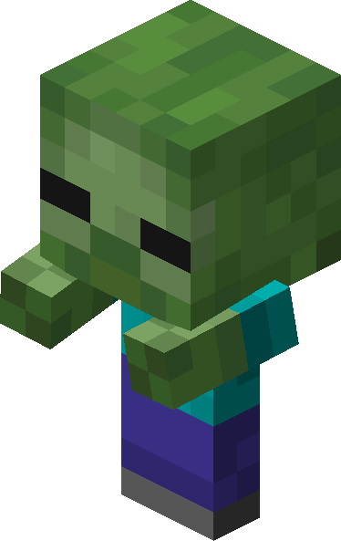

Ласкаво просимо до світу Minecraft!
Minecraft - це пісочниця, де можна будувати та виживати.
ХІТ
Режими гри
- Виживання - класичний режим, де потрібно добувати їжу, recursos та захищатися від монстрів.
- Творчий - режим з нескінченними ресурсами, де гравець не може загинету і має повну свободу для будівництва.
- Хардкор - це найскладніший варіант виживання, у якому складність гри назавжди зафіксована на рівні Складно , а після загибелі гравця світ блокується або видаляється.
- Пригоди - спеціальний ігровий режим, призначений для проходження кастомних карт, квестів та історій, створених іншими гравцями.
Моби
Усі живі істоти в грі називаються мобами. Вони поділяються на три типи: Ворожі, Дружні та Нейтральні.
| Ворожі | Дружні | Нейтральні |
|---|---|---|
| Кріпер | Корова | Залізний голем |
| Зомбі | Курка | Зомбіфікований піглін |
| Скелет | Свиня | Ендермен |

